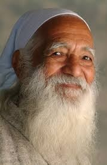
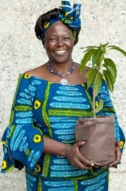
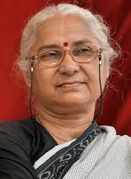
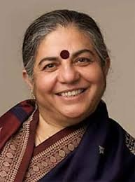

Mankombu Sambasivan Swaminathan (7 August 1925 28 September 2023) was an Indian agronomist, agricultural scientist, geneticist,
administrator and humanitarian. Swaminathan was a global leader of the green revolution. He has been called the main architect of
the green revolution in India for his leadership and role in introducing and further developing high-yielding varieties of wheat and rice.

Sunderlal Bahuguna (9 January 1927 21 May 2021) was an Indian environmentalist and Chipko movement leader. The idea of the Chipko
movement was suggested by his wife Vimla Bahuguna and him. He fought for the preservation of forests in the Himalayas, first as a member of
the Chipko movement in the 1970s, and later spearheaded the anti-Tehri Dam movement from the 1980s to early 2004.

Wangari Muta Maathai; 1 April 1940 25 September 2011 was a Kenyan social, environmental, and political activist who
founded the Green Belt Movement, an environmental non-governmental organization focused on the planting of trees, environmental
conservation, and women's rights. In 2004 she became the first African woman to win the Nobel Peace Prize.

Medha Patkar (born 1 December 1954) is an Indian Social activist working on social issues for tribals, dalits, farmers,
labourers and women facing injustice in India. She is an alumna of TISS, a premier institute of social science research in India.Patkar is a founding member of Narmada Bachao Andolan in Madhya Pradesh, Maharashtra and Gujarat. She is also one of the founders of the
National Alliance of People's Movements (NAPM), an alliance of hundreds of progressive people's organizations.

Vandana Shiva (born 5 November 1952) is an Indian scholar, environmental activist, food sovereignty advocate, ecofeminist and
anti-globalization author. Based in Delhi, Shiva has written more than 20 books. She is often referred to as "Gandhi of grain" for her
activism associated with the anti-GMO movement.Shiva is one of the leaders and board members of the International Forum on Globalization
(with Jerry Mander, Ralph Nader, and Helena Norberg-Hodge), and a figure of the anti-globalisation movement.